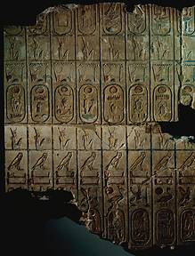

|
King lists
There are several examples of 'king lists' that survive from ancient Egypt. They list the names of past pharaohs in order. However, we have learned from archaeological evidence that these lists were not always accurate or complete.

Pharaohs in ancient Egypt wanted to demonstrate that they were the rightful ruler of the country. One way they did this was by connecting their name with the names of pharaohs of the past. Many pharaohs had a list of past pharaohs, ending with themselves, carved onto a temple wall or written on papyrus. Since the point of making the list was to connect their name with those of successful and well-respected pharaohs, they sometimes left out pharaohs who were unpopular or controversial. For example, Queen Hatshepsut, and Akhenaten were not included on this list from Abydos.
|